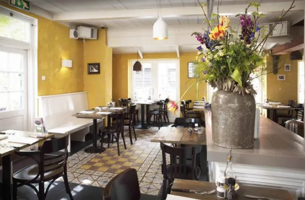
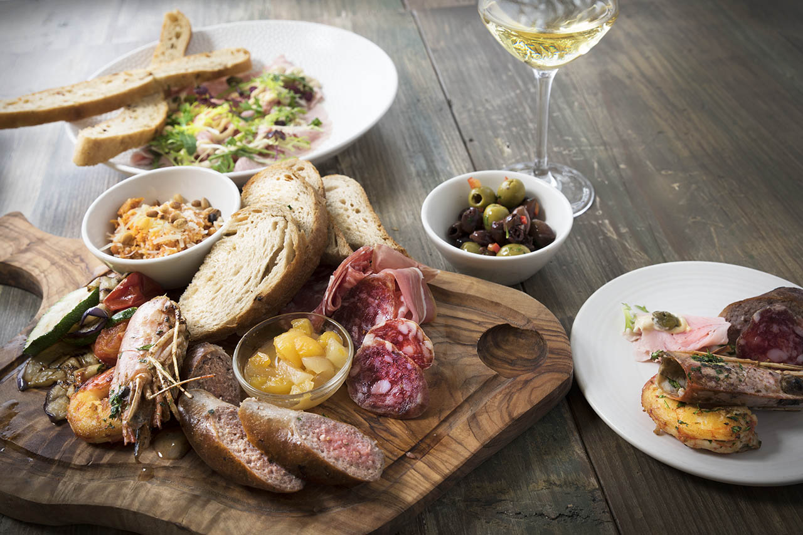
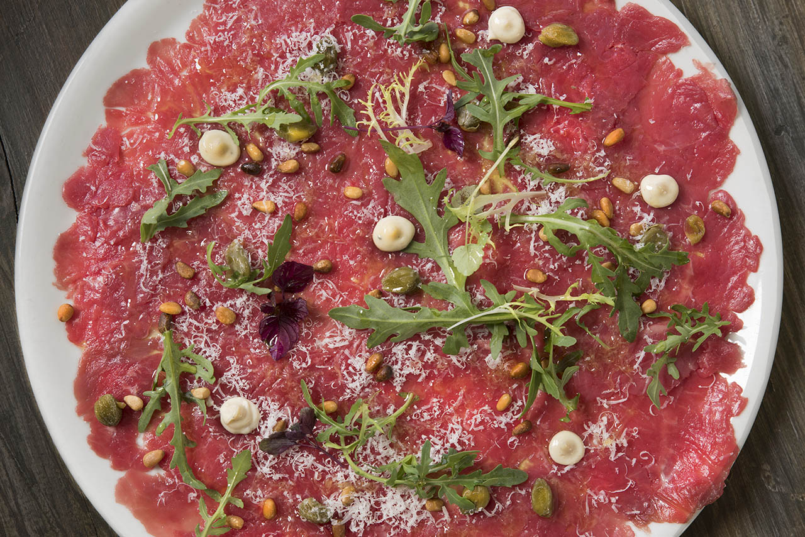
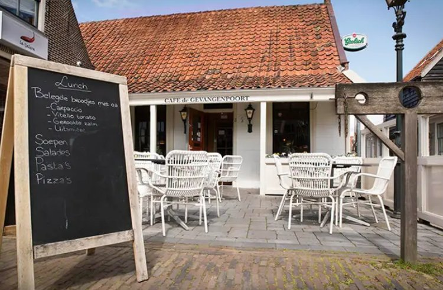
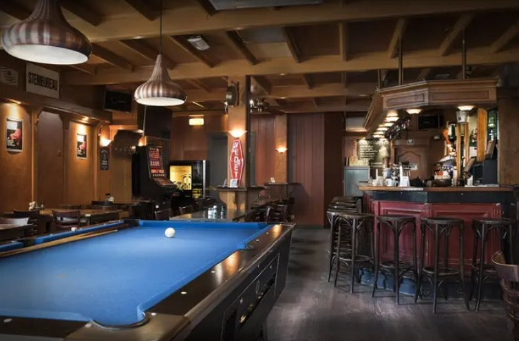

Italiaanse specialiteiten in Edam
La Galera
Welkom bij La Galera, jouw favoriete plek. Geniet van een gezellige koffie of authentieke Italiaanse specialiteiten.
Of bel het restaurant: 0299 37 19 71
Ontdek de rijke smaak van Italië
Bij ons kunt u genieten van authentieke Italiaanse gerechten, bereid door onze getalenteerde chef-koks. Proef de rijke smaken van Italië en laat u verwennen in een gezellige en stijlvolle omgeving.
Van harte welkom in ons restaurant. Wij gebruiken alleen pure, verse en eersteklas producten. En dat proeft u!
Van de chef
Onze kaart wisselt elke maand. Zo zijn we in staat om met de seizoenen mee te koken en de mooiste ingrediënten van elk jaargetijde te verwerken.

De kaart
De menukaart wisselt elke maand; dit is een voorbeeld van de kaart. Alle prijzen in euro.

Ciabatta’s, tosti’s en meer
Keuze uit wit of bruin brood
- Ciabatta carpaccio met kappertjes, Parmezaan, rucola, extra vierge olijfolie, pijnboompitten en basilicumpestoCiabatta carpaccio with capers, Parmesan cheese, rocket, extra virgin olive oil, pine nuts and basil pesto€ 12,50
- Ciabatta vitello tonnato met tonijnsaus, kappertjes, extra vierge olijfolie en rucolaCiabatta with vitello tonnato, tuna sauce, capers, extra virgin olive oil and rocket€ 12,50
- Ciabatta hete kip met pikante mayonaise en zoetzure groentenCiabatta with spicy chicken, spicy mayonnaise and sweet-and-sour vegetables€ 12,50
- Ciabatta gerookte zalm met roomkaas, rode ui en kappertjesCiabatta with smoked salmon, cream cheese, red onion and capers€ 12,50
- Ciabatta gegrilde groenten met buffelmozzarella en pestoCiabatta with grilled vegetables, buffalo mozzarella and basil pesto€ 11,50
- Van Dobbenkroketten (2 stuks) met witbrood en mosterdVan Dobben croquettes (2 pieces) with white bread and mustard€ 8,00
- Tosti van zuurdesembrood met kaas, venkelworst, rode ui en pikante mayonaiseSourdough toastie with cheese, fennel sausage, red onion and spicy mayonnaise€ 8,50
- Tosti van zuurdesembrood met ham en kaas en ketchupSourdough toastie with ham and cheese and ketchup€ 5,50
- Panini’s (3 stuks) met carpaccio, Parmezaanse kaas, kappertjes en pijnboompitten; Parmaham met basilicumpesto; vitello tonnato met tonijnmayonaisePaninis (3 pieces) with carpaccio, Parmesan, capers and pine nuts; Parma ham with basil pesto; vitello tonnato with tuna mayonnaise€ 11,00
- Beefburger met kaas, sla, tomaat, komkommer, rode ui, ingelegde jalapeño pepers, ketchup en mayonaiseBeef burger with cheese, lettuce, tomato, cucumber, red onion, pickled jalapeño peppers, ketchup and mayonnaise€ 12,50
- Extra: met frietWith chips+ € 3,00
- Uitsmijter ham/kaas met witbroodFried eggs with ham/cheese on white bread€ 9,00
Dolci
Nagerechten
- Tiramisu met gemarmerd koffie-ijsTiramisu with marbled coffee ice creamSuggestie: Valentino Butussi, Verduzzo Friulano “Passite”, Friuli-Colli Orientali, € 6,50€ 8,00
- Koffie met iets lekkersSuggestie: Limoncello Lorenzo Igna € 4,00 of Amaretto Berta € 6,50€ 7,00
- Gelato-roomijs met slagroom en chocoladebrokken€ 6,75
- Wisselend dessertv.a. € 9,50
Vino da dessert
Dessertwijn per glas
- Presidential Ruby Port€ 4,50
- Presidential Tawny Port€ 4,50
- Presidential 10 jaar oude Tawny€ 6,50
- Moscato Frizzante, Piëmonte€ 6,00
- Valentino Butussi, Verduzzo Friulano “Passite”€ 6,50
- Quinta do Paral, XXV Licoroso, Alentejo€ 8,00
- Brigaldara, Recioto della Valpolicella€ 9,50
- I Sodi, Vin Santo Chianti Classico€ 12,50
Cognac, calvados, armagnac
- Rémy Martin VSOP€ 6,00
- Martell VS€ 5,50
- Courvoisier€ 5,50
- Château du Breuil calvados VSOP€ 6,50
- Armagnac VSOP€ 6,50
Grappa
- Grappa Nardini Bianca€ 5,50
- Grappa Nardini Selezione extrafina€ 7,00
- Grappa Nardini Riserva 3 jaar€ 6,00
- Grappa Nardini Riserva 5 jaar€ 7,00
- Grappa Nardini Riserva 7 jaar€ 9,00
Bevande calde
Warme dranken
- Koffie / espresso€ 3,20
- Dubbele espresso€ 5,50
- Cappuccino / koffie verkeerd€ 3,50
- Latte macchiato€ 3,60
- Thee€ 3,20
- Verse muntthee€ 3,50
- Verse gemberthee€ 3,50
- Warme chocomel€ 3,50
- Irish coffee (whiskey)€ 8,70
- French coffee (Grand Marnier)€ 8,70
- Italian coffee (Amaretto)€ 8,70
- Spanish coffee (Tia Maria)€ 8,70
Een kaart vol Italiaanse wijnen, van Piëmonte tot Sicilië. Tik op een wijn voor de beschrijving.
Mousserend
glasfles
-
Althea, Valdobbiadene Prosecco Superiore Brut, Veneto€ 6,00€ 30,00Glera
De wijn is strogeel van kleur. De geur is complex met een elegant boeket. De smaak is aangenaam droog, fris en constant.
-
Freghettina Franciacorta Brut, Lombardije–€ 49,50Chardonnay, Pinot Nero
Strogele kleur. In de neus variërend van hazelnoot tot geuren van zoet fruit en witte bloemen. Frisse smaak met levendige zuren en een fijne mousse. Franciacorta wordt in verschillende stijlen geproduceerd, maar de meest bekende is de Brut. De Brut van Ferghettina heeft een fermentatie van dertig maanden op fles gehad.
Rosé
glasfles
-
Riva, Domaine de la Sanglière, Provence€ 5,50€ 27,50Cinsault, Grenache
Deze wijn straalt één en al verleiding uit, de zachtroze kleur om te beginnen. Vervolgens het aantrekkelijke, zachtfruitige parfum en de mooie goed gevulde smaak maakt het helemaal af. Niet ingewikkeld wel ontzettend lekker.
-
Podere Ruggeri Corsini, Langhe Rosato Piëmonte€ 6,50€ 32,50Nebbiolo
Deze veelzijdige rosé is perfect als aperitief, maar kan ook zeker gecombineerd worden met lichte voorgerechten, gegrilde vis of schaal-/schelpdieren. Een heerlijke expressie van de Nebbiolo-druif in een moderne, toegankelijke stijl.
-
Montonale, Rosa di Notte, Lombardije–€ 39,50Barbera, Gropello, Marzemino Nero, Sangiovese
Prachtige rosé met een scala aan bloemige en fruitige aroma’s waarin sensaties van roos, aardbei en hints van granaatappel opvallen. De smaak begint zijdezacht en wordt dan levendig door frisse frambozentonen en mineraliteit.
Wit per glas
glasfles
-
Cadetto Bianco, Lungarotti, Umbrië€ 5,50€ 27,50Grechetto, Trebbiano
De Cadetto Bianco van Lungarotti heeft een licht strogele kleur. Het parfum is vol fruitig en licht. De smaak is heerlijk sappig en volle fruittonen worden aangevuld met een frisse en kruidige afdronk. Ideaal als aperitief en bij frisse salades en lichte voorgerechten.
-
Valentino Butussi, Kret Pinot Grigio, Friuli-Colli Orientali€ 6,00€ 30,00Pinot Grigio
Door de korte schilweking heeft de wijn een lichte koperkleur. In de neus veel florale tonen met wat mineralen. In de smaak aangevuld met tropisch fruit. Door de licht aanwezige tannines een glas dat fris is, maar wel wat meer structuur heeft. In de afdronk mooi fris met een klein bittertje.
-
Brigaldara, Soave, Veneto€ 6,50€ 32,50Garganega
Deze Soave van Brigaldara is een heerlijke dorstlesser met karakter. In het glas schittert hij lichtgeel, met een geurige neus vol witte perzik, sappige peer, citrus en een vleugje bloesem. Een subtiele hint van amandel en natte steen geeft hem extra diepgang.
-
Contra Soarda, Vespaiolo, Veneto€ 7,00€ 35,00Vespaiolo
De wijn is bleekgeel en helder. Zodra je aan het glas ruikt weet je dat dit iets bijzonders is. Enkele steekwoorden zijn peer, citrus, bloemenhoning en vuursteen. In de volle smaakaanzet domineren de rijpe aroma’s, maar al snel ontwikkelt de smaak zich onder invloed van de fijne zuren door naar een frisse en minerale afdronk.
Wit per fles
fles
-
Lungarotti, Torre di Giano 62, Umbrië€ 33,50Trebbiano, Gretchetto
De wijn heeft een strogele kleur met delicate goudreflecties. In de neus heeft de wijn aroma’s van witte perzik, acacia en sinaasappelbloesem. De smaak is fris met minerale tonen en een lange, elegante afdronk.
-
Cantine Federici, Solaris, Ligurië€ 38,50Vermentino
In de neus heel expressieve florale aroma’s, in combinatie met gekonfijte citrus. De smaak is opvallend vol en geconcentreerd, met een heel mooie balans tussen rijp fruit en frisheid, bloemige tonen en mineraliteit. De afdronk is heerlijk lang, aromatisch en zacht.
-
Valentino Butussi, Sauvignon Blanc, Friuli-Colli Orientali€ 37,50Sauvignon Blanc
Als liefhebbers van een echte Sauvignon Blanc ben je bij Butussi aan het juiste adres. Exotisch fruit en rijpe Citrus tonen domineren het parfum. De combinatie van mooie mineraliteit en rijp fruit zorgen ervoor dat de wijn goed combineert met vis, schaal- en schelpdieren, ook prima als aperitief.
-
Valentino Butussi, Pinot Grigio “Ramato”, Friuli-Colli Orientali€ 37,50Pinot Grigio (Copper Colored)
Deze Pinot Grigio is door de wijnmaker in de ‘Ramato’-stijl gemaakt. Hieraan dankt de wijn de mooie koperkleur. In de neus komen delicate tonen van wilde bloemen en amandelen naar voren. In de smaak komt er een mooi pallet aan tropisch fruit naar voren. Door de aanwezigheid van lichte tannines is het een frisse wijn met een mooie structuur.
-
Podere Ruggeri Corsini, Langhe Bianco, Piëmonte€ 38,50Arneis, Sauvignon Blanc, Chardonnay
In de mond is de wijn fris en levendig, met een uitstekende balans tussen de verkwikkende zuren en de romige textuur. De smaak is sappig en verfrissend, met lagen van fruit en een subtiele kruidigheid die overgaan in een zuivere, minerale afdronk.
-
Baglio del Cristo di Campobello, Lalúci, Sicilië€ 42,50Grillo
De Lalùci Grillo komt uit Campobello di Licata, waar kalkrijke heuvelgrond en zeebries zorgen voor een uniek microklimaat. De Grillo-druiven worden met de hand geoogst in twee rondes, in augustus en de 1e helft van september, om fruit, frisheid en balans optimaal te behouden. Na koele maceratie en zachte persing rijpt de wijn vier maanden op de droesem in roestvrijstalen tanks. In de geur biedt de wijn bloemen, mineraliteit, citrusfruit, witte perzik, peer en groene appel. Het resultaat is een frisse, elegante en expressieve Siciliaanse Grillo van hoge kwaliteit die goed te combineren met lichte gerechten, vis, wit vlees of gewoon als aperitief.
-
Montonale, Montunal, Lugana, Lombardije€ 42,50Trebbiano di Lugana (Turbiana)
De wijn heeft een mooie licht gele kleur en een florale neus met fruitige geuren van witte perzik en citroenschil. In de smaak komen deze aroma’s terug, afgewisseld met kruidige tonen van tijm en salie. Dit samen met de minerale afdronk maakt het een elegante wijn met veel lengte.
-
Contra Soarda, Il Pendio, Veneto€ 42,50Garganega, Vespaiolo
Deze wijn, afkomstig van een vulkanische bodem, heeft een diep gele kleur met een mooie gouden glans. De geur is vol, kruidig, boterig en complex. Ook in de smaak komt die kruidigheid naar voren, om vervolgens over te gaan in vanille en in droge stijl af te sluiten. Geweldige wijn om met rijke volle gerechten te combineren. Zowel bij vis als bij vlees.
-
Podere Ruggeri Corsini Lolly, Langhe Chardonnay, Piëmonte€ 47,50Chardonnay
De wijn heeft een helder gouden kleur. Het bouquet is expressief en complex, met levendige aroma’s van rijpe appel, peer, en subtiele hints van citrus en witte bloesem. De geur ontwikkelt zich verder met delicate tonen van vanille en een lichte toast, afkomstig van een gecontroleerde rijping op eikenhout, die de wijn extra diepte en structuur geeft.
-
Lungarotti, Vigna Il Pino, Umbrië€ 56,50Grechetto, Trebbiano, Vermentino
Een wijn met een mooie structuur, evenwichtig en elegant. In de neus tonen van limoen, tijm en acacia bloemen afgewisseld met kokosnoot, vanille en witte chocolade. De smaak is hartig en geurig met een lange stevige afdronk en tegelijkertijd in balans met verfrissende zuren.
-
Brigaldara, Picol de Legno, Veneto€ 58,50Garganega
In de neus opent de Picol de Legno met aroma’s van amandel, vanille, witte perzik en de florale geur van Garganega-bloesem. In de mond toont de wijn zich vol en gelaagd. Deze houtgerijpte Italiaanse witte wijn is een bijzondere ontdekking met finesse én karakter.
Rood per glas
glasfles
-
Cadetto Rosso, Lungarotti, Umbrië€ 5,50€ 27,50Sangiovese
De kleur is robijnrood met paarse nuances. In de neus jong, met viooltjes en groene specerijen. De smaak is delicaat, zacht, met veel rood fruit en lichte tannines en een vriendelijke afdronk.
-
Kiruna, Montepulciano d’Abruzzo, Abruzzen€ 6,00€ 30,00Montepulciano
Donker robijnrood, bijna ondoordringbaar en met de karakteristieke paarse reflecties van de jeugd. In de neus rijp bosfruit, viooltjes en een fijne kruidigheid. In de mond zorgen het gulle sap, het smakelijke fruit en de milde zuren voor een verleidelijke zachtheid. Lichtdrogende tannines geven de wijn een lekker pittige afdronk.
-
Cantine Federici, Colli di Luni ‘Eutichiano’, Ligurië€ 6,50€ 32,50Sangiovese, Merlot en Ciliegiolo
Deze bijzondere wijn is vernoemd naar Colli di Luni Rosso, een belangrijke paus en de oorspronkelijke naam van de heilige van Luni: Eutychian. Met zijn robijnrode kleur, intense en fruitige geur en sappige, kruidige smaak bijzonder geschikt om met vlees- maar ook om stevige en kruidige visgerechten te begeleiden.
-
Contra Soarda, Veneto Rosso Gaggion, Veneto€ 7,00€ 35,00Marzemino Nero
De wijn heeft een mooie rode kleur. In de neus komen fruitige, maar ook kruidige aroma’s naar voren. Zacht rood fruit en kersen proeven we duidelijk terug in de wijn. In de afdronk mooie specerijtonen met zachte aardse tonen wat het een elegant en vriendelijk glas maakt. Heerlijk bij pasta’s met vlees en gerechten met truffel.
Rood per fles
fles
-
I Sodi, Chianti Classico, Toscane€ 36,50Sangiovese, Canaiolo
In de geur de typische Chianti-combinatie van rijpe rode kersen en maartse viooltjes. De smaak is elegant, maar krachtig, met lekker kersensap en een vleugje kruidig zoethout. Geweldige zuren in combinatie met mooi rijpe tannines, geven de wijn z‘n slanke en karaktervolle voorkomen. Eerste klas Chianti Classico.
-
Brigaldara, Valpolicella Superiore Case Vecie, Veneto€ 36,50Corvina, Corvinone, Rondinella
In het glas toont de wijn een heldere robijnrode kleur. De geur opent met rijpe kersen, een hint van balsamico en subtiele tonen van vanille en kruiden. In de mond is hij soepel en verfijnd, met een levendige zuurgraad, rijp rood fruit en een elegante, frisse afdronk.
-
Villa di Capezzana, Barco Reale Carmignano, Toscane€ 39,50Sangiovese, Cabernet Sauvignon,
Cabernet Franc, Canaiolo Nog altijd behoort het kleine gebiedje Carmignano tot de kwalitatieve top in Toscane. Carmignano staat al eeuwen bekend als ‘grand cru’ van Toscane. De selectie van de druiven en de wijze van vergisten en opvoeden maken hem tot een ander soort wijn, vol fruit, krachtig en stoer. De wijn rijpt tien maanden in grote vaten. Past goed bij diverse vleesgerechten.
-
Baglio del Cristo di Campobello, Adènzia Rosso, Sicilië€ 39,50Nero d‘avola, Syrah
Het bouquet van de ‘Adènzia’ Rosso verspreidt een weids spectrum van aroma’s, variërend van rijp zwart bosfruit en morellen tot verleidelijke hints van vanille, rook, specerijen en zoete tabak. Deze robuust fruitige wijn is full-bodied en heeft stevige doch zachte tannines. Deze wijn is een ideale begeleider van gegrild vlees, stoofschotels, gerechten met truffel, en stevige pasta schotels.
-
Brigaldara, Valpolicella Ripasso, Veneto€ 39,50Corvina, Corvinone, Molinara, Rondinella
Een dieprode kleur met een volle warme geur van kersen, pruimen en kruidig hout. De sappige smaak geeft pruimen, tabak en kersen met een goed gestructureerde, lange afdronk. Ripasso betekent letterlijk ‘opnieuw laten passeren’ en staat voor het proces waarin een Valpolicella Classico over de uitgeperste pulp van een Amarone wordt geleid. De Ripasso die hiervan het resultaat is, is duidelijk voller en vleziger van smaak dan een gewone Valpolicella.
-
Socré Barbera di Alba Superiore, Piëmonte€ 39,50Barbera
De wijn heeft een intense, diep robijnrode kleur. In de neus opent de wijn met aroma’s van rijpe rode vruchten, zoals kersen, bramen en een vleugje framboos, ondersteund door delicate tonen van specerijen en een hint van vanille door de rijping op hout. De wijn heeft een lange, aangename afdronk met een lichte mineraliteit en een hint van pure chocolade.
-
Rosarubra, Montepulciano d’Abruzzo, Abruzzen€ 39,50Montepulciano
Intens donkerrood van kleur. In de diepe geur valt gelijk het rijke karakter van deze wijn op: heel rijp zwart fruit domineert, kruidige accenten van laurier en rozemarijn maken het parfum compleet. In de mond imponeert de wijn door z‘n enorme concentratie. Dit gaat gepaard met een fluwelige volheid die de wijn heel erg aantrekkelijk maakt. De krachtige structuur van zachte zuren en rijpe tannines houden de wijn in de afdronk perfect staande.
-
Socré, Langhe Nebbiolo, Piëmonte€ 39,50Nebbiolo
De Langhe Nebbiolo heeft een licht granaatrode kleur met aroma’s van rozen, viooltjes en wilde bessen, met subtiele hints van kruiden. De smaak is elegant en goed uitgebalanceerd, met zijdezachte tannines en een frisse zuurgraad die de wijn levendig maakt. Perfect voor liefhebbers van elegante Nebbiolo-wijnen.
-
Agricola Felline, Giravolta, Puglia€ 41,50Primitivo
Deze krachtige rode wijn heeft een diepe robijnrode kleur. In de geur komen rijpe zwarte kersen, bramen, pruimen en subtiele tonen van vanille en kruiden naar voren. De smaak is vol, warm en fluweelzacht, met rijp donker fruit en mooi geïntegreerde tannines. Een vleugje cacao, specerijen en mediterrane kruidigheid geeft de wijn extra diepte en karakter. De afdronk is lang, rond en aanhoudend, met een elegante balans tussen kracht en zachtheid.Heerlijk bij gegrild vlees, rijke pastagerechten, wild of rijpe kazen.
-
Scopone Rosso di Montalcino, Toscane€ 49,50Sangiovese
Helder robijnrode kleur met paarse nuances. De neus opent met geuren van rijpe rode bessen, maraska-kers en viooltjes, aangevuld met subtiele tonen van balsamico en zoethout. In de mond is hij levendig, harmonieus en zijdezacht, met frisse zuren, fijne tannines en een hartige, aanhoudende afdronk.
-
Scopone Rimani IGT, Toscane€ 49,50Cabernet Sauvignon, Merlot, Syrah en Sangiovese
Deze rode wijn heeft een diepe kleur en een uitnodigende geur van rijp rood fruit. In de smaak is hij soepel en vol, met tonen van kers, pruim en een vleugje kruidigheid. De zachte tannines en frisse balans zorgen voor een elegante en toegankelijke afdronk. Perfect bij pasta, gegrild vlees, borrelplanken en milde kazen.
-
Lungarotti Rubesco Riserva “Vigna Monticchio”, Umbrië€ 80,00Sangiovese
De druiven groeien uitsluitend op het afzonderlijke perceel Monticchio. De wijn wordt een jaar lang in verschillende soorten eikenhouten vaten opgevoed. Vervolgens rijpt de wijn veertig maanden in de fles. Gemiddeld heeft deze wijn een rijpingspotentieel van 30-35 jaar, waarmee het één van de langst levende wijnen van Italië is.
-
Corsini, Barolo ‘Bussia’, Piëmonte€ 80,00Nebbiolo
Bussia is een ‘Cru’ in de gemeente Barolo. Bussia is iets hoger gelegen en dus iets koeler, wat zorgt voor meer elegantie en complexere wijnen doordat de druiven er langer over doen om rijp te worden. Naast vele fruittonen komen er geuren naar boven als cacao, leer, tabak, baksteen, viooltjes en licht vanille. De rijpheid van de druiven vertaalt zich in een rijke, volle smaak. Complex in de aroma’s en met de krachtige structuur die Barolo eigen is.
-
Scopone, Brunello di Montalcino, Toscane€ 80,00Sangiovese
In de neus ontdek je aroma’s van zwarte kersen, ardesia en florale tonen. In de mond is hij krachtig en levendig, met een overtuigend en gelaagd karakter. De afdronk is omhullend en hartig, met rijpe tannines en een mooi evenwicht tussen frisheid en diepgang.
Dessertwijn
glas
-
Moscato Frizzante, Piëmonte€ 6,00Moscato
Deze Moscato d’Asti groeit op vijfhonderd meter boven zee. Mede hierdoor heeft de wijn een alcoholpercentage van 5,5%. De wijn sprankelt je glas uit en heeft een mooie delicate zoete geur. In de smaak komt deze delicate zoete smaak met intense aroma’s samen met een lichte zuurgraad, waardoor deze goed te combineren valt met verschillende (fruit)desserts.
-
Valentino Butussi, Verduzzo Friulano “Passite”, Friuli-Colli Orientali€ 6,50Verduzzo Friulano
Na de oogst worden de volledige trossen in kleine ondiepe houten kistjes gelegd om te drogen. Door het drogen zijn de smaken en de suikers in de druiven zeer geconcentreerd. Dit zijn de perfecte omstandigheden om een echte “Passite” te maken. De wijn is bruin gekleurd en heeft parfums van rozijnen, karamel en noten. Mooi zoet maar met opwekkende zuren en een klein bittertje.
-
Quinta do Paral, XXV Licoroso, Alentejo, Portugal€ 8,00Alicante Bouschet, Trincadeira
Diep donkerpaars van kleur, met een uitbundig aroma van rijp zwart fruit. De smaak is complex, vol en diep, met opvallende frisheid – typisch voor de regio Vidigueira. Gemaakt via traditionele open-top vergisting, gevolgd door versterking met wijnalcohol en 25 maanden rijping op Frans eiken. Een krachtige, elegante versterkte wijn met lengte en frisheid.
-
Brigaldara, Recioto della Valpolicella, Veneto€ 9,50Corvina, Corvinone, Rondinella
Deze indrukwekkende rode wijn heeft een diepe robijnrode kleur en is rijk aan aroma’s van mokka, zwarte kersen, pruimen, espresso en kruidige tonen. Na fermentatie rijpt de wijn twee jaar op grote houten vaten, wat de complexe en lange afdronk verder verfijnt. Zoete, geparfumeerde tonen omhullen de mond en zorgen voor een bevredigende en aanhoudende finale.
-
I sodi, Vin Santo Chianti Classico, Toscane€ 12,50Malvasia, Trebbiano
Een goudgele dessertwijn met aroma’s van honing, amandel en noten. De druiven worden na indroging pas in december geperst, waarna de wijn minstens vijf jaar rijpt in kleine ‘caratelli’-vaten, gevolgd door flesrijping. Mooi in balans tussen zoetheid en alcohol, met een lange afdronk. Perfect bij cantucci, gedroogd gebak of blauwschimmelkaas.

Geniet op ons sfeervolle terras
Bij ons kun je in alle rust genieten van een heerlijke maaltijd of verfrissend drankje op ons sfeervolle terras. Onze mediterrane binnentuin biedt de perfecte setting voor een ontspannen en gezellige ervaring.

Café De Gevangenpoort
Sfeervol café voor de bierliefhebber
Buiten de mogelijkheid gezellig een drankje te drinken of een pooltje te leggen, kan er aan het begin van de avond ook gegeten worden in het café.
Bel het café: 0299 37 42 52
Reserveer een tafel
Wil je zeker zijn van een beschikbare tafel in het restaurant of café? Voorkom teleurstelling en reserveer tot 24 uur van tevoren.
Contact en adres
- Adres
- Gevangenpoortsteeg 1
1135 AD Edam - Restaurant La Galera
- 0299 37 19 71
- Café De Gevangenpoort
- 0299 37 42 52
- Stuur ons een bericht
- reserveren@lagalera.nl